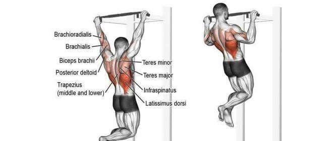
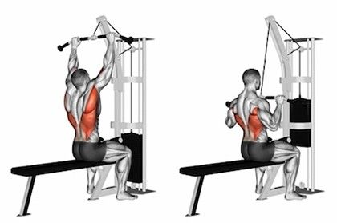
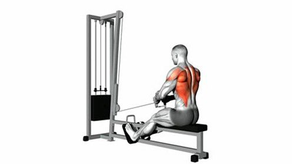
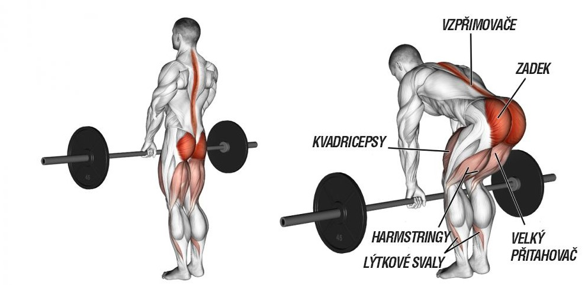
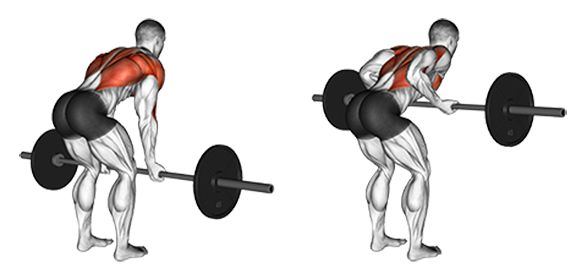

Shyby
Výchozí poloha: Vis na hrazdě, paže šíře než na šířku ramen, úchop nadhmatem.
Provedení: Kontrakcí zádových svalů přitahujeme tělo k hrazdě až do bodu, kdy nám míjí čelo a nos. Nahoře výdech a pomalu s nádechem spouštíme do výchozí pozice.
Stahování kladky
Výchozí poloha: Sed na lavičce, čelem ke stojanu. Úchop žerdi na šířku ramen a více.
Provedení: Kontrakcí zádových svalů stahujeme adaptér dolů k hrudníku po mírně šikmé dráze. V dotažení vydechneme. Pozvolně vracíme zpět do výchozí pozice, do napnutých paží, nádech.
Přítahy spodní kladky
Výchozí poloha: V sedě, čelem ke kladce, uchopíme žerď kladky, mírně pokrčené nohy, paže napnuté, záda kolmo k zemi.
Provedení: Tahem paží vzad přitahujeme nástavec kladky ke spojnici břicha a hrudního koše. Mírně se zakloníme a vydechneme. Kontrolovaně pouštíme kladku do napnutých paží a nadechujeme. Držíme lokty u těla.
Mrtvý tah (Deadlift)
Výchozí poloha: Postavte se s chodidly na šíři vašich boků. Osu uchoptenadhmatem na šířku vašich ramen. Kolena jsou mírně pokrčená, záda v přirozeném zakřivení a hlava v prodloužení páteře. Aktivujte střed těla.
Provedení: Pomocí aktivace svalů dolních končetin a zad plynule zvedněte činku ze země až do narovnání kolen a trupu. Dráha činky vede těsně před nohama. Poté s nádechem kontrolovaně spouštějte činku na zem a následně navažte dalším opakováním.
Přitahování osy v předklonu
Výchozí poloha: Postavte se s chodidly na šíři vašich boků a lehce pokrčte kolena. Mírně se předkloňte s tím, že záda zůstávají v přirozeném zakřivení, ramena stažená směrem od uší a hlava v prodloužení páteře. Uchopte činku nadhmatem na šířku vašich ramen a zvedněte ji do výše ke kolenům.
Provedení: S výdechem pomocí kontrakce svalů zad přitáhněte činku k bokům. Poté ji kontrolovaně vraťte zpět ke kolenům a navažte dalším opakováním.
.